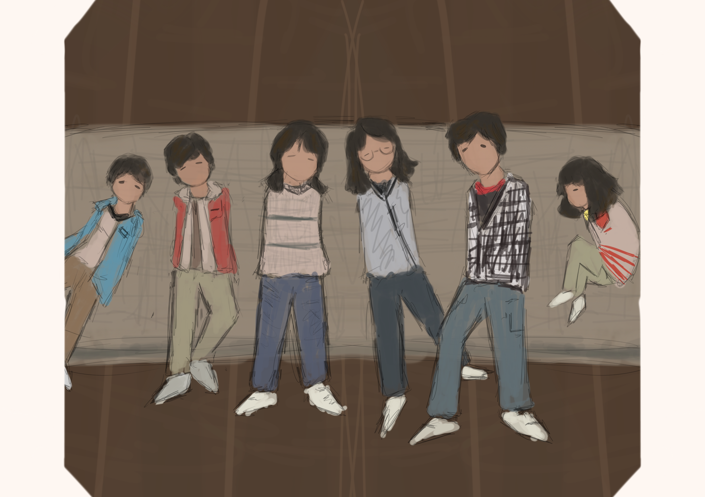

Life Story · Hong Kong
《「陳」年往事，新的下一頁》
以下內容根據訪談整理，讓一段與家人相依相伴的童年，以故事形式留下來。

1960年代 · 童年
一張床，六個孩子
Elaine的童年，有一張要由六個孩子分享的床褥。床褥鋪在地上，兄弟姊妹打橫躺下，雙腳伸到床褥外。多年後她提及童年，地方雖然狹窄擠迫，反而讓一家人關係更緊密，更覺溫暖。
同時，身為二姊的她，很早便肩負起分擔家計的責任。當時正值內地移民潮與嬰兒潮，香港人口數量從1945年約60萬激增至1960年約360萬，令社會及個人資源都非常有限。Elaine父母從內地來港謀生，要在當時養活六個孩子並不容易。
在生活拮据的日子，她年紀輕輕便要照顧弟妹，後來更要工作分擔家計。有限的收入既要供養起一頭家，也是Elaine爭取讀書的機會。
而生活的艱難與溫馨，便藏在一次患病的回憶裏。她記得，小時候曾患上肺炎，住院數日仍持續發燒。父親見她情況不妙，毅然背起她，轉往養和醫院求醫。家中雖不寬裕，但父親在危急時刻的決定，讓她得到及時的救治。
直到今天，說起這件事，她仍感激父親當年的照顧。那張床褥，留在 Elaine 的童年記憶裏。她記得六個孩子擠着睡的侷促，也記得兄弟姊妹打鬧的樂趣。日子就在擠迫與熱鬧之間逝去，而她想繼續讀書的心願，也將帶領故事走向下一頁。
那張床褥，留在 Elaine 的童年記憶裏 · 而她想繼續讀書的心願，將帶領故事走向下一頁